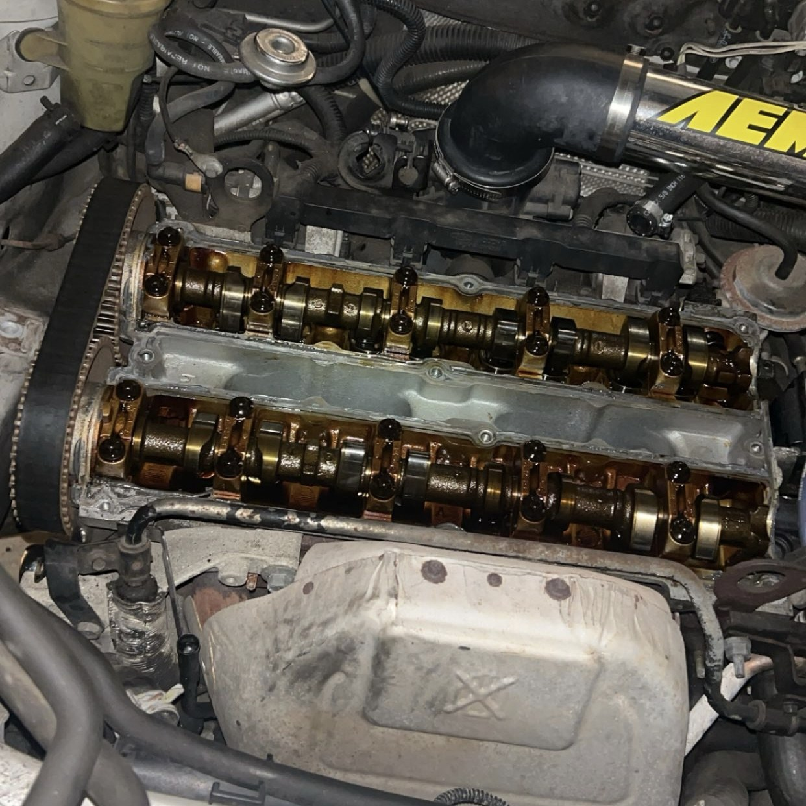
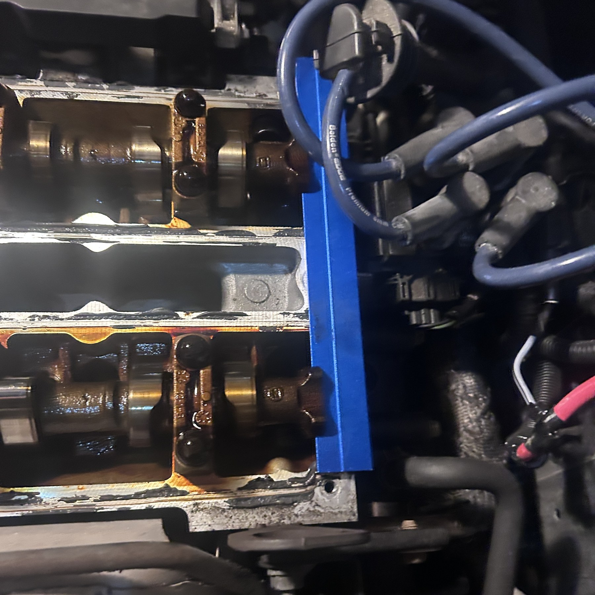
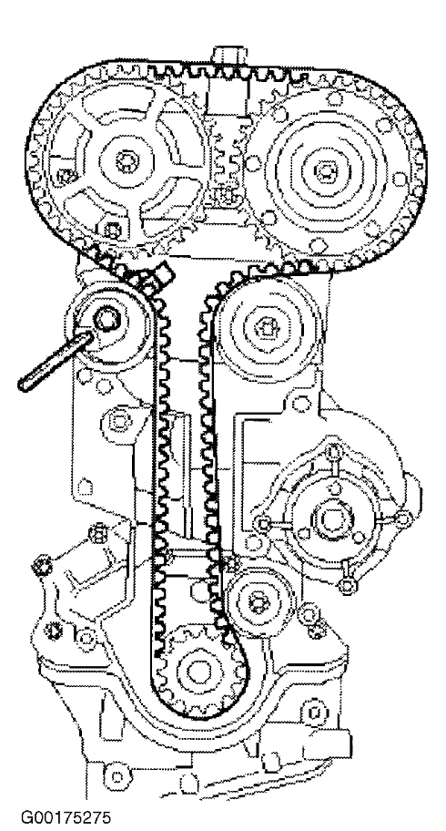
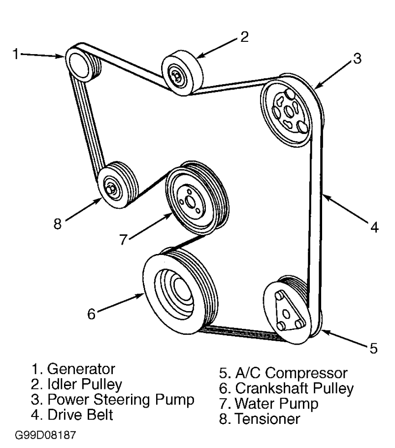
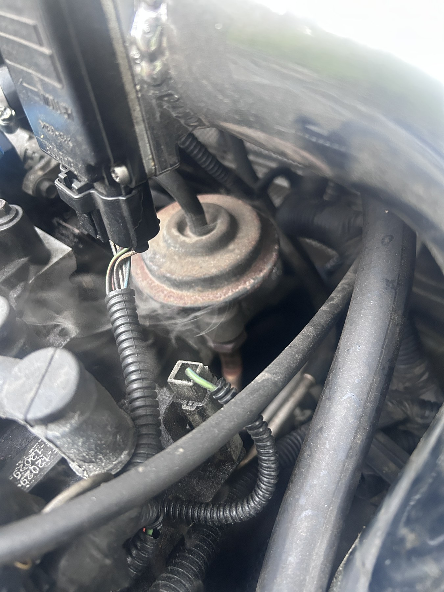

The story
I bought my Ford Focus with money I saved working in restaurants. It meant a lot to me: it represented the hours I had worked and something I was responsible for keeping on the road. Working on it made engineering personal.
Ownership, mechanical maintenance, and learning to follow the evidence.

I bought my Ford Focus with money I saved working in restaurants. It meant a lot to me: it represented the hours I had worked and something I was responsible for keeping on the road. Working on it made engineering personal.
Saving for the car through restaurant work gave me a strong sense of ownership. When it needed attention, I wanted to understand what was happening beneath the hood. The Focus became a hands-on way to connect mechanical principles with a system I relied on.
It also changed how I look at engineering problems: a car brings together rotating machinery, fluid flow, cooling, electrical systems, and control. A problem in one part can affect the behavior of the whole vehicle.
The timing belt needed replacement, along with the water pump. Taking on that work meant understanding the relationship between the crankshaft and camshafts, the routing of the belts, and the role of alignment in keeping the engine’s motion synchronized.
The timing belt coordinates the camshafts with the crankshaft so valve motion stays synchronized with piston motion. Working around those components made the importance of angular alignment, belt tension, and careful assembly tangible.
The accessory drive is a separate system. The supplied routing diagram shows how the crankshaft pulley transfers power to accessories, including the water pump. Considering both belt paths helped me understand how power transmission and cooling fit into the wider engine system.




I also diagnosed a vacuum leak using a smoke test. Rather than replacing parts without a clear cause, I used smoke as a visual tracer to identify where air was escaping and narrow the problem to a ruptured diaphragm.
This was a practical exercise in fault isolation: understand the system, choose a test that makes the failure observable, and use the evidence to locate the faulty component. The smoke gave me a physical indication of a leak that was otherwise difficult to see.
It taught me to separate a symptom from its underlying cause and to stay methodical when the answer is not immediately clear.
